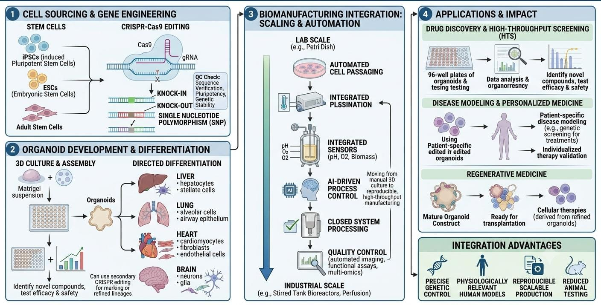

The evolution of tissue reconstruction—transitioning from basic autologous skin transfer to highly engineered acellular dermal matrices and automated 3D bioprinting systems—has dramatically elevated survival rates and quality of life for severe trauma patients. However, current bioengineered skin models remain fundamental approximations of native human skin. The true future of reconstructive medicine lies in the seamless synthesis of advanced genetic engineering, artificial intelligence, and biomimetic material chemistry.

As illustrated in Fig xiii, the upcoming generation of biological therapeutics will actively integrate functional genomic modifications directly into bioengineered constructs. By shifting away from raw, unmodified allogeneic donor cells and moving toward universally compatible, gene-edited lineages, scientists aim to render the phenomenon of immunological graft rejection entirely obsolete. The ultimate paradigm shift will involve creating completely "off-the-shelf," vascularized, multi-layered organotypic structures capable of integrating into any human recipient instantaneously.
A prominent focus of futuristic regenerative engineering is the implementation of CRISPR-Cas9 gene editing to create universal donor cell lines. By selectively knocking out genes responsible for encoding major histocompatibility complex (MHC) class I and class II molecules, researchers can produce "immunologically silent" keratinocytes and fibroblasts. These universally tolerated cells can be expanded endlessly in vitro, embedded into structural hydrogels, and safely applied to any patient without triggering cellular or antibody-mediated rejection cascades. This advancement effectively solves the primary logistical limitation of allogeneic substitutes.
Simultaneously, the discipline is embracing the development of 4D bioprinting architectures. Unlike traditional static 3D printing, 4D bioprinting incorporates time as a dynamic fourth dimension. The bio-inks utilized are composed of stimuli-responsive "smart" shape-memory polymers or responsive hydrogels. Upon exposure to physiological triggers post-implantation, such as changes in thermal conditions, pH gradients, or enzymatic concentrations, these structures undergo controlled mechanical transformations. They can actively expand, wrap around irregular sub-dermal cavities, or deploy micro-channels to guide host vascular networks, forcing immediate tissue perfusion.
Furthermore, the horizon features the scaling of skin organoids. Rather than printing basic flat sheets of stratified cells, scientists are generating complex, multi-lineage three-dimensional organoids derived from induced pluripotent stem cells (iPSCs). These micro-tissues naturally self-assemble in bioreactors to include functional sweat glands, active sebaceous units, functional neural networks, and nascent hair follicles. Integrating these functional appendages into clinical grafts will finally resolve the chronic thermoregulatory deficiencies and tactile insensitivities that plague modern full-thickness burn survivors.
Finally, the implementation of Artificial Intelligence (AI) and Machine Learning is redefining the design and optimization of advanced biomaterials. AI-driven generative networks can rapidly analyze vast combinations of synthetic polymers, predicting cell adhesion, degradation rates, and mechanical compatibility in seconds. This eliminates years of trial-and-error laboratory screenings, allowing for the computational customization of scaffolds tailored to a patient's exact metabolic and physiological profile.
To understand how these converging technologies will reshape the clinical landscape over the coming decades, we can categorize the most disruptive research domains based on their biological target and developmental timeline.
| Research Frontier | Core Technological Driver | Primary Regeneration Target | Anticipated Clinical Horizon |
|---|---|---|---|
| Universal Allografts | CRISPR-Cas9 antigen deletion in donor lines. | Permanent, completely non-immunogenic off-the-shelf coverage. | Early Phase I/II Clinical Testing. |
| 4D Dynamic Scaffolds | Stimuli-responsive shape-memory hydrogels. | Accelerated cell migration and instant self-directed vascularization. | Advanced Pre-clinical In Vivo Validation. |
| Appendage Integration | iPSC-derived multi-lineage skin organoids. | Restoration of sweat production, sensation, and cosmetic hair units. | Translational Animal Modeling. |
| In Situ Clinical Printing | Topographical laser-guided robotic deposition. | Direct, automated reconstruction within the operating room. | Active Human Pilot Demonstrations. |
In conclusion, the trajectory of wound care and reconstructive surgery is moving decisively away from simple injury containment and toward complete anatomical and functional restoration. The long-standing barriers of donor site limits, rapid graft rejection, and severe hypertrophic scarring are being broken down by molecular, mechanical, and computational breakthroughs.
As genetic editing eliminates immunological rejection, smart dynamic scaffolds accelerate functional blood supply, and iPSC organoids restore missing skin appendages, the boundary between artificial tissue and natural human skin will completely vanish. The ultimate realization of these futuristic methodologies will shift the medical paradigm permanently, transforming modern burn centers into hubs of authentic, scarless tissue regeneration and completely restoring full physical health to survivors worldwide.